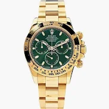

Recently Lost Items
Check out some items that have recently gone missing.

Camera
Location: Makerere University Campus
Black in colour.

Necklace
Location: Lugogo Shopping Mall
Silver with diamonds.

Bag
Location: Nakawa Centre
Brown and black in colour.
See More Lost Items
Recently Found Items
Here are some items people have turned in recently.

Motorcycle
Location: Near Nakawa Market
Black & orange in colour.

Watch
Location: Makerere Road
Brown leather strap.

Ear Pods
Location: Lugogo Mall
White wireless earphones.
See More Found Items
How to Return Items
If you have found an item or want to claim a lost one, please visit the
Contact Page or call +256 776 773 793.
Well guide you through the safe return process.